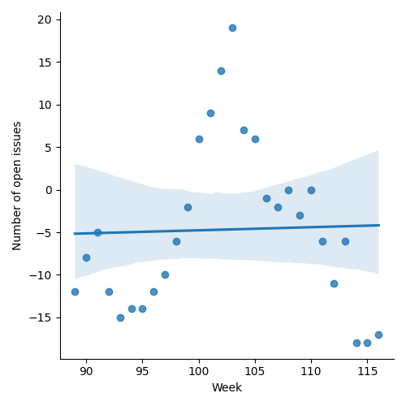
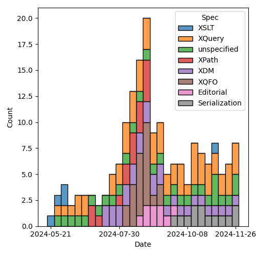
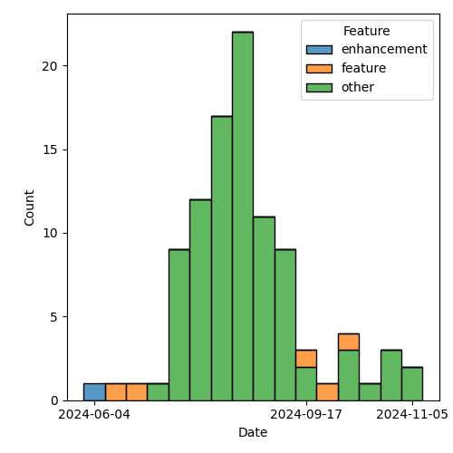

QT4 CG Meeting 101 Minutes 2024-12-03
Meeting index / QT4CG.org / Dashboard / GH Issues / GH Pull Requests
Table of Contents
Draft Minutes
Summary of new and continuing actions [0/9]
[ ]QT4CG-080-07: NW to update the build instructions in the README[ ]QT4CG-082-02: DN to work with MK to come to agreement on the fn:ranks proposal[ ]QT4CG-088-01: NW to consider how best to add a dedication to MSM.[ ]QT4CG-088-04: [Someone] needs to update the processing model diagram needs vis-a-vis the static typing feature[ ]QT4CG-089-01: CG to draft a PR that attempts to resolve the operators described in #755 to a smaller number of orthogonal choices.[ ]QT4CG-097-02: MK to make the XSD schema component references into links to XSD[ ]QT4CG-097-03: DN to proposal an axis for accessing the siblings of a node.[ ]QT4CG-101-01: MK to add a way to query the sort order of a map[ ]QT4CG-101-02: MK to review the option “random” for a map order option[ ]QT4CG-101-03: MK to provide a bit more of the motivation for map ordering.[ ]QT4CG-101-04: MK to consider how map ordering applies to records.
1. Administrivia
1.1. Roll call [11/12]
CG gives regrets.
[X]David J Birnbaum (DB)[X]Reece Dunn (RD)[X]Sasha Firsov (SF)[ ]Christian Grün (CG)[X]Joel Kalvesmaki (JK)[X]Michael Kay (MK)[X]Juri Leino (JLO)[X]John Lumley (JWL)[X]Dimitre Novatchev (DN)[X]Wendell Piez (WP)[X]Ed Porter (EP)[X]Norm Tovey-Walsh (NW). Scribe. Chair.
1.2. Accept the agenda
1.2.1. Status so far…
These charts have been adjusted so they reflect the preceding six months of work.

Figure 1: “Burn down” chart on open issues

Figure 2: Open issues by specification

Figure 3: Open issues by type
1.3. Approve minutes of the previous meeting
Proposal: Accept the minutes of the previous meeting.
Accepted.
1.4. Next meeting
This next meeting is planned for 10 December.
No regrets heard.
The CG does not plan to meet on 24 or 31 December.
1.5. Review of open action items [1/9]
(Items marked [X] are believed to have been closed via email before this agenda was posted.)
[ ]QT4CG-080-07: NW to update the build instructions in the README[ ]QT4CG-082-02: DN to work with MK to come to agreement on the fn:ranks proposal[ ]QT4CG-088-01: NW to consider how best to add a dedication to MSM.[ ]QT4CG-088-04: [Someone] needs to update the processing model diagram needs vis-a-vis the static typing feature[ ]QT4CG-089-01: CG to draft a PR that attempts to resolve the operators described in #755 to a smaller number of orthogonal choices.[ ]QT4CG-097-02: MK to make the XSD schema component references into links to XSD[ ]QT4CG-097-03: DN to proposal an axis for accessing the siblings of a node.[ ]QT4CG-098-02: NW to look at the XSL stylesheet for XSD, #374.- NW doesn’t think getting the stylesheet working is worth the effort, suggested a couple of other options in the issue.
1.6. Review of open pull requests and issues
1.6.1. Blocked
1.6.2. Merge without discussion
The following PRs are editorial, small, or otherwise appeared to be uncontroversial when the agenda was prepared. The chairs propose that these can be merged without discussion. If you think discussion is necessary, please say so.
- PR #1626: 1625 Editorial changes to notes on path expressions
- PR #1623: 1615 Editorial rearrangement of "context" sections
- PR #1614: Fix xfunction refs in XSLT
- PR #1613: 1605 csv-to-xml to return document node rather than element
- PR #1611: 1608 add dependency to fn compare
Proposal: merge without discussion.
Accepted.
1.6.3. Close without action
It has been proposed that the following issues be closed without action. If you think discussion is necessary, please say so.
- Issue #1194: New function fn:query()
Proposal: close without further action.
Accepted.
2. Technical agenda
2.1. PR #1587: 557 Add fn:binary-resource
See PR #1587
MK isn’t sure how to move it forward.
- JWL: I’d like to discuss it next week or after Christmas as I’ll be away.
- MK: It’s related to the file and binary specifications.
- NW: John and I are going to work on getting the file spec…
- DN: It would be better if we had some general mechanism for resource management, not only just for file operations.
2.2. PR #1596: 1592 Rework rules for selecting a layout
See PR #1596
- MK: CG is probably the one who’s studied this most carefully. But let’s take a look anyway.
MK reviews the (non-diff) version; section 17.4.
- MK: The layouts haven’t changed significantly.
- … There’s a new section: Selecting an Element Layout
- … It’s not substantially new, but it’s presented differently.
- … It has a new
disable-layoutsoption to prevent some layouts from being used.
MK reviews the new rules.
- MK: There’s a new section: Lost XDM Information. It describes exactly what’s lost when you transform to JSON. Non-normative, but answers the question several folks asked.
- JWL: Can we put wildcards in the list of elements effected?
- MK: I haven’t attempted it yet. I did look at adding a default and that didn’t seem workable.
- JLO: While re-reading this for today, I came across something I didn’t notice before: there’s the possibility that one of those elements will have null as it’s value. That’s when XSD says it’s nilled.
- MK: Yes.
- JLO: Why isn’t the empty rule a conversion to null as well? Do we need to differentiate?
- MK: Unfortunately, nilled elements exist, so you have to say something about them. I decided mapping to null seemed sensible. I didn’t put a lot of effort into that case because I think it’s an uncommon edge case.
- JLO: The empty layout produces an empty string instead of null.
- MK: Empty and nilled are different so mapping them differently made sense. But it’s a bit arbitrary. The mapping from an empty elemen to the four possible JSON constructs is going to be subjective.
- WP: I think this is great. I think the current mapping for empty/nilled is good. My biggest concern is with pathological schemas. Are we going to get errors?
- MK: The general idea is that the function is error free.
- WP: With respect to clashing names on different types, what is uniform going to do?
- MK: If you have a schema, it’s driven by the type annotation not the name.
- … If you have the type of schema where the element name is a property name not a class name, it’s not going to work. But neither is XSD!
- WP: I’m more worried about the non-XSD case.
- MK: We’re assuming the element names denote classes, if they don’t, it’s not going to work well.
- WP: I think that’s fine, but we should be up-front about the limitations: encourage folks to do transformations.
- MK: We’ll get experience, hopefully it’ll feed back into the spec.
- DN: I couldn’t find what the default values are for the different cases in the option record. It would be good to have defaults for everything.
- MK: The defaults are all there.
- DN: But I couldn’t work it out when there is an XSD or not. Maybe we should explain what happens if there is no option record.
- MK: If there’s a schema, use the schema types. The default for
uniformisfalse(). - DN: With respect to empty elements, there are so many choices, we should make that a value in the options map.
- MK: You get some of that control if you disable the empty layout.
- DN: But it’s very difficult to know what to do. An option would be more precise and clear.
Proposal: accept this PR.
Accepted.
2.3. PR #1609: 564 Ordered Maps
See PR #1609
- MK: The background for this comes from the JSON work. Converting from XML to
JSON loses order. It’s also true with existing ways of serializing as JSON;
you always lose order.
- … A lot of the converters out there retain the order. There’s a lot of benefit, even if it doesn’t have semantic meaning. If you’ve got 1000 lines of JSON, it’s nice if a single change doesn’t reorder the whole map!
- … Having some way to preserve order seems like a good idea.
- … So we need maps that retain order. I thought I’d combine that with another requirement that’s been on the TODO list for a while: using sorted keys in a map to do quicker searching for dates for example.
- MK: First there’s a data model change:
- … A map is logically a sequence of key/value pairs (not a collection)
- … There’s an ordering property with the values
random,sorted, andinsertion - … With appropriate updates for creation and updating.
- MK: There are changes to F&O:
- … For all of the map operations, we have to say how the effect the order.
- … Map ordering doesn’t effect the result of
fn:deep-equal. - …
fn:parse-jsonis given an option to retain the order. - …
fn:xml-to-jsonis already defined to retain order, so that’s just rephrased a bit. - … There’s a new section on ordering of maps
- … There are new options on the
map:build,map:merge, andmap:of-pairsfunctions. - … Map constructors produce maps in a random order.
- JWL: I like the ideas generally. When you’ve put in sequence on
map:keys, it’s important to make the point that they still have to be unique.- … Can you find out the sorting order of a particular map?
- MK: I didn’t provide an interrogative, but I’m sure one is needed.
- EP: Minor quibble about the naming conventions: sorted, inserted, and random. Maybe it should be “unsorted” so it’s less of a promise.
- MK: To me, “random” is familiar. Terminology is always difficult.
From Zoom chat: arbitrary, undefined, none…
- JLO: There’s a lot here. How do I get an insert-order map from another kind of map?
- MK: You’d have to rebuild it using for example
map:of-pairs.
Some discussion of what insertion order means and how it works.
- JLO: JavaScript uses insertion order by default. I’m a little cautious about this change.
- DN: I think this is necessary. Languages like C# have sorted functions.
- … We could create a new type
sorted-mapand a new typeordered-map, then we wouldn’t have to change anything. Then we only have to specify the new map types. - … If we regard an array as a map, that’s already a sorted map.
- … Making the relationships between different kinds of maps will be clearer, I think.
- … When we construct ordered or sorted maps, we should provide the sequence of key names as a parameter.
- … We could create a new type
- MK: Yes, I think that can be done with existing functions, but perhaps we should show how.
- DN: The main thing is the suggestion that we have separate map types. That would be more precise.
- MK: My instinct is that new types would be a lot more effort than a new property on an existing type.
- DN: I disagree, this is a big change to the map type.
- MK: I’d like to see a proof of concept to demonstrate that.
Some further discussion of which would be easier.
- WP: I’m not sure I understand the requirement. I’m a little uneasy about the complexity. Is there more to this than comparing maps?
- MK: One way to make it simpler to say that all maps are ordered!
- WP: Couldn’t you just force this at serialization time?
- MK: You could have an ordered map; but I’m concerned about the performance implications of making all the maps ordered. I’m reluctant to impose that on users who don’t need it.
- WP: I’d like to see something simpler. That’s why I come back to what the requirements are.
- RD: I agree with MK, I think having separate types leads to complexities especially if you have user defined functions that can take or return a sorted maps and then you get an insert-ordered maps. What happens in all the cases has to be defined in complicated subtyping rules. Whereas with this, you only need to copy it when you make a modification. Unlike C#, XQuery and XPath don’t have interfaces so you can’t define an interface type that various types implement.
- MK: We could define an abstract type.
- RD: But then you have to rework all of the data model.
- JWL: Does this apply to records as well?
- MK: A record is a type that constraints the contents of a map. I haven’t said anything about ordering of records. A map of any ordering can conform to a record type. One could certainly define an ordering over records.
- DN: Isn’t an ordered record just a tuple?
- … My main point is the observation on performance. It’s a serious issue. Searching for a key in an sorted list is very different from searching in an unsorted map.
- … Maybe this is why there’s a separate class for this in C#.
- … Why are we putting everything in a single type when we have examples of multiple types in other languages.
- RD: Implementators are free to use the different types to support the specific kinds of maps.
ACTION QT4CG-101-01: MK to add a way to query the sort order of a map ACTION QT4CG-101-02: MK to review the option “random” for a map order option ACTION QT4CG-101-03: MK to provide a bit more of the motivation for map ordering. ACTION QT4CG-101-04: MK to consider how map ordering applies to records.
Discussion will continue at a future meeting.
3. Any other business
None heard.